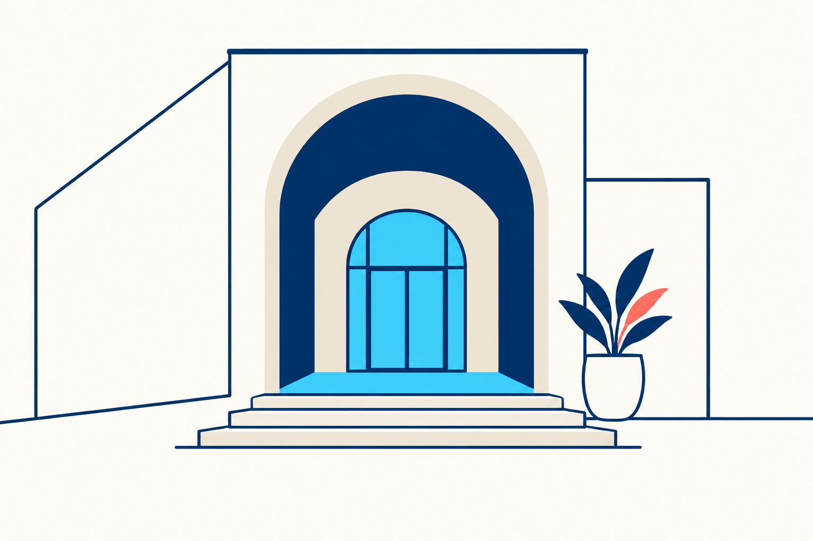
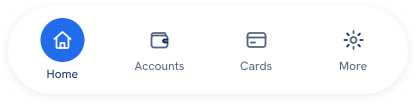
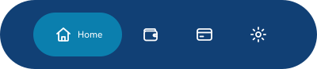
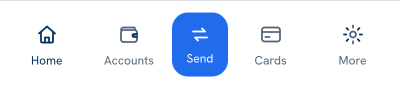
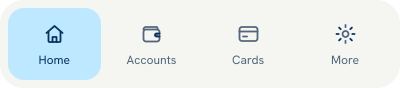

Vibrant has a job.
One dominant field. A clear accent. Warm paper and confident ink keep the whole composition grounded.
Odyssey 3.0 / made for real life
Confident colour. Thoughtful details. A little more life. One design standard for expressive products and composed institutions.
One dominant field. A clear accent. Warm paper and confident ink keep the whole composition grounded.
Products keep their own type, rhythm and navigation. Shared semantics make them feel like one family.
People, objects and places tell different stories. Professional illustration gives each one its own perspective.
One system / a real range
Expression changes the composition, never the meaning of an action. Try the same foundation in two different voices.
Your money, at a glance.
Room for your next chapter.

Live SDK theme foundation · fictional data · specimen actions open design/developer resources. Existing integrations opt in to the new profile.
Art direction / different stories
Change the scene, viewpoint and silhouette. Keep decisive contours, observed proportions and purposeful colour.
Drive / human narrative
Close human gestures and a confident diagonal bring a local pickup to life. Functional details stay in the interface.
Orbit / environment
Layered architecture, open sea and a small human presence give travel a different scale and rhythm.
Dedicated image-model artwork · PNG studies with prompts and provenance · individual production signoff is recorded separately.
Navigation / fit the product
A dock is part of the identity. Choose its weight and hierarchy around the product, then preserve labels, targets and direction.

A clear action anchor and a separate navigation stage.

Compact destinations, with more room for the selected one.

One task gets emphasis within a quiet navigation rhythm.

A stronger grouping for clearly bounded destinations.
SVG snapshots from the native Figma library. The kit includes LTR and RTL; interactive component masters remain in Figma.
Portable by design
Practical source material for designers, developers and agents. Clear formats. Clear boundaries. Ready to build on.
Colour, composition, typography, motion and rules that protect product individuality.
Read the compass ↗Core, Drive and Orbit in light/dark DTCG JSON, plus CSS and typed foundation adapters.
Explore core tokens ↗Baloo 2 for expressive display, Hanken for functional text and numbers, Beiruti for Arabic.
Fonts and licences ↗Figma masters, variants and properties. The inventory records SDK readiness separately.
Open the Figma library ↗94 editable outline SVG icons, dock snapshots and four distinct raster illustration studies.
See the kit contents ↗A repeatable working brief: source identity, compose, inspect actual pixels, record the evidence.
Read the designer brief ↗Release 3.0.0
New expression foundations for Web, Flutter and Kotlin Multiplatform. Existing themes keep their defaults while products adopt the new edition.
Web / explicit adoption
Neptune.applyTheme(
document.querySelector("#app"),
"neptune", {
edition: "odyssey3",
product: "wallet",
mode: "light",
dir: "ltr"
});3.x names the new standard. Earlier 2.x releases belong to the first edition. Source and design kit are distributed on GitHub; registry publication has its own release process.